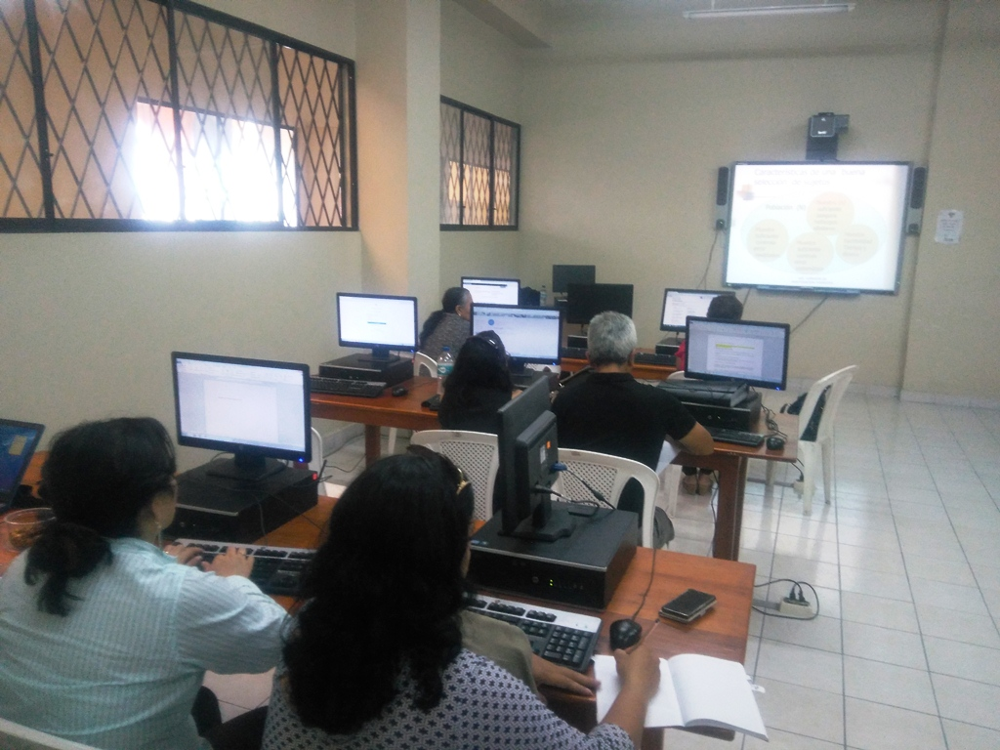

2008: Constitución y Alfabetización Digital
El 2008 marcó un antes y un después debido a factores externos. La nueva Constitución de la República (Arts. 16 y 17) declaró el acceso a las tecnologías de información como un derecho universal. Esto obligó a la Universidad Central a invertir masivamente en equipamiento para cerrar la brecha de "analfabetismo digital".
Ficha del Proyecto: Laboratorios Siglo XXI
- 🖥️ Adquisición: Compra masiva de computadoras Intel Core 2 Duo con monitores LCD.
- 💰 Contexto: Ejecución de partidas presupuestarias extraordinarias para cumplimiento constitucional.
- 👤 Encargado: Vicerrectorado Administrativo y Financiero.
- 📜 Marco Legal: Decreto Ejecutivo 1014 (Uso de Software Libre en la administración pública).
"Art. 16.- Todas las personas, en forma individual o colectiva, tienen derecho a: [...] 2. El acceso universal a las tecnologías de información y comunicación."
"Art. 17.- El Estado fomentará la pluralidad y la diversidad en la comunicación, y al efecto: [...] 2. Facilitará la creación y el fortalecimiento de medios de comunicación públicos, privados y comunitarios, así como el acceso universal a las tecnologías de información y comunicación..."
1. La Gran Renovación de Hardware
Para cumplir con los nuevos estándares de evaluación (previos al CONEA), la UCE dio de baja cientos de equipos obsoletos. Llegaron los primeros monitores planos y procesadores de doble núcleo que permitían ejecutar software más pesado.
| Tecnología | Detalle de la Mejora (Estándar 2008) |
|---|---|
| Procesadores | Llegada masiva de Intel Core 2 Duo (2.2 GHz), reemplazando a los Pentium 4. |
| Pantallas | Transición total de CRT (Tubo) a LCD (Plana) de 17", ahorrando energía y espacio. |
| Almacenamiento | Discos duros SATA de 160 GB (Estándar de mercado en ese año). |
| Conectividad | Tarjetas de red Gigabit Ethernet en laboratorios clave. |

Representación de los equipos de la UCE.- Los nuevos laboratorios equipados con tecnología LCD tras el mandato constituyente. Fuente de la imagen: UCE - Repositorio de noticias
2. El Decreto 1014: El Intento del Software Libre
En abril de 2008, el gobierno emitió el Decreto Ejecutivo 1014, que establecía el uso obligatorio de Software Libre en la administración pública. Esto provocó un choque cultural en la universidad.
- El Reto: Se intentó migrar las computadoras administrativas de Windows a Ubuntu 8.04 (Hardy Heron), lanzado ese mismo mes.
- La Resistencia: Hubo fuerte resistencia por parte del personal administrativo acostumbrado a Microsoft Office, lo que llevó a un modelo híbrido.
- El Logro: Las Facultades de Ingeniería y Ciencias adoptaron Linux en sus mallas curriculares, fomentando el desarrollo *Open Source*.